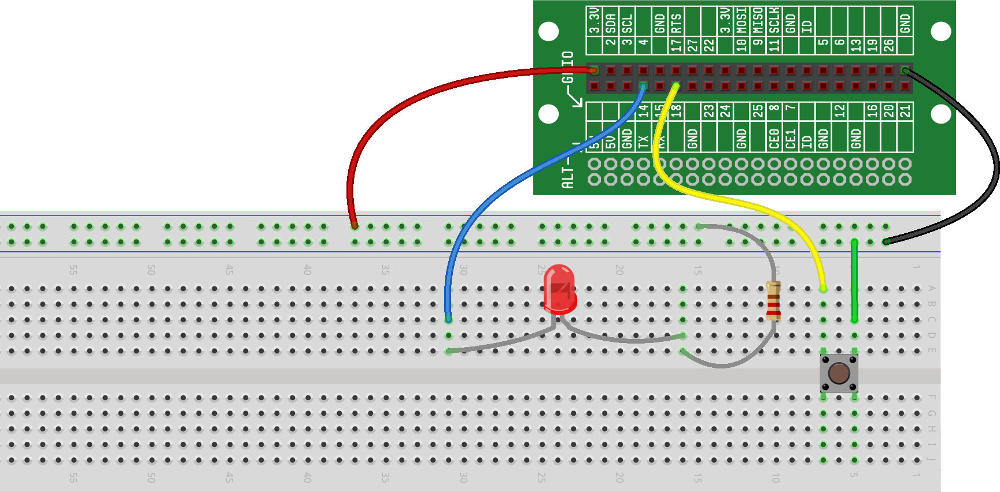

In the GPIO AS INPUTS (READING BUTTONS) project, we were able to get button input from a GPIO. In the GPIO AS OUTPUTS (CONTROLLING LEDS) project, we were able to control an LED using GPIO. In this project, we're going to put those concepts together to read a button input using one GPIO and use that information toggle an LED using another GPIO.
For the hardware in this project, we’re going to wire two completely independent circuits:
The first circuit will consist of a button wired to a GPIO (like we did in GPIO AS INPUTS (READING BUTTONS));
The second circuit will consist of an LED wired to a separate GPIO (like we did in GPIO AS OUTPUTS (CONTROLLING LEDS))
Here is what the breadboard should look like with the two circuits wired. If you have any questions about how to wire either of these two circuits, refer back to the projects referenced above.
You’ll notice that our button is wired to GPIO18 and our LED is wired to GPIO14.
Now that we have the circuits built and ready to go, it’s time to write our software. For this project, our software is going to do two things:
Read the state of the button (pressed or released) using a GPIO as input
If the button is pressed, turn on the LED using a GPIO as output, and if the button is not pressed, turn off the LED using the GPIO as output
Here is the code that will accomplish this:
Let's to through the code line-by-line and take a look at what it's doing:
On Line 1, we import the module we will need to initialize
the button (called Button())
On Line 2, we import the module we will need to initialize
the LED (called Output())
On Line 4, we initialize our button. We
call the Button()
function, which returns a "Button object" to our my_button variable.
We talked about that a bit in VARIABLES & ASSIGNMENTS,
but the important thing to understand is that we can now use my_button
to call other GPIO functions that can control our button
On Line 5, we initialize our LED. We
call the Output()
function, which returns a "GPIO Output object" to our my_led variable.
Again, we talked about that a bit in VARIABLES & ASSIGNMENTS,
but the important thing to understand is that we can now use my_led
to call other GPIO functions that can control our LED
On Line 7, we check the state of the button using the is_pressed()
function. This function will return True if the button is pressed
(this is done by reading the voltage at the GPIO, like we discussed in GPIO AS INPUTS (READING BUTTONS)), and will return False if the
button is released
On Line 8, if the return from our if statement is True (the button is pressed), we light the LED using the on() function
On Lines 9 and 10, if the return from our if statement is False (the button is released), we turn off the LED using the off() function
Notice that with this code, the button status is only read one time when the program is run. So, if you want the LED to illuminate, you need to be holding the button when you run the code. If you’re not holding down the button at the time the program is run, the code will see that the button is released and the LED will not illuminate.
To make this program more useful, we can put the
code that reads the button into a loop
so that it will
continually read the button state and update the LED every time it
changes. To do this, we simply put the last four lines of the
code (the lines that test the state of the button and turn the LED on
or off) in a while True: loop, like this:
Give it a try. The flashlight will continue to work until you manually stop the program.